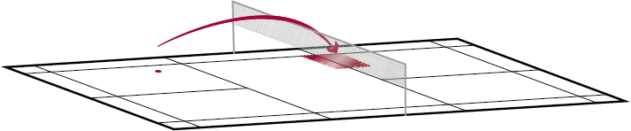

Badminton – Schlagtechnik
Abwehr Rückhand kurz gerade
Mit einer kurzen geraden Abwehr Rückhand wird der Gegner gezwungen, den Shuttle unterhalb der Netzkante zu treffen. So kann er seinen Angriff nicht fortsetzen.
Bemerkung: Weitere Perspektiven stehen in der Playlist zur Verfügung (Menu oben links).
Wohin fliegt der Shuttle?
Die kurze Abwehr fliegt vom Mittelfeld knapp übers Netz gerade ins gegnerische Vorderfeld.
Wann wird der Schlag gebraucht?
Wenn der Spieler einen Smash kurz ins Vorderfeld abwehren möchte.
Welches sind die wichtigsten Merkmale des Schlags?
Ausgangsposition
- Racket so schnell wie möglich in die Ausgangsposition bringen.
- Rückhandgriff.
- Racket und Ellbogen vor dem Körper.
- Schlagfläche nahe am erwarteten Treffpunkt.
Ausholphase
- Leichtes Ausholen durch Vorbringen des Ellbogens.
- Alternative: Keine Ausholbewegung.
Schlagphase
- Schlagfläche direkt zum Treffpunkt vor dem Körper schieben (Ellbogen und Schulter Richtung Netz führen).
Ausschwungphase
- Fast keine Ausschwungphase.
- Rasche Rückführung in die Ballerwartungshaltung
Quelle: Richard, Th. et al. (2016). Badminton: Lauf- und Schlagtechnik. Magglingen: Bundesamt für Sport BASPO.